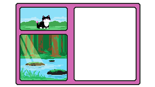

You decide to go towards the water, following the sound through the forest. As it grows louder, you find yourself stepping onto a grassy bank. The trees have been parted by the river, with the rest of the forest continuing on its opposite side. The water is a beautiful blue, reflecting the color of the morning sky. Jutting rocks disrupt the current, causing the water to swirl and part in crashing waves. They are large and numerous enough that you could easily hop across them to the other side. Yet, you linger, studying the river. The way the water flashes as it passes by intrigues you. There are streaks of... something else, below. Part of you wonders, what's down there? Will you dunk your head in the water to find out, or will you let it be?